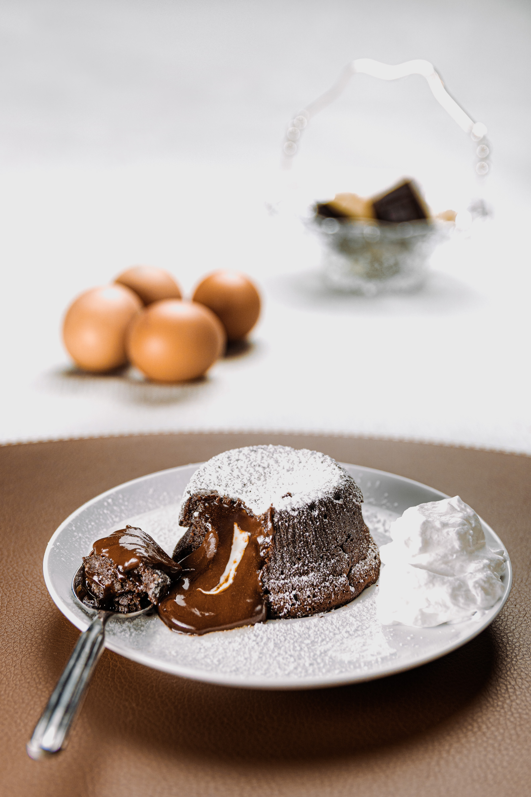

Chocolate Cake

Photo by Nicola Pavan on Unsplash
Description
Chocolate lava cakes are rich chocolatey cakes with a gooey and velvty sauce at the center. Perfect for both intimate and large-ish gatherings. While this cake conjures up winter nights cosy in front of the fireplace, I urge you to also imagine providing this as a part of a decadent tea in the summer twilight.
This cake can be made in under an hour and even prepared one day in advance for ease of serving. This recipe focuses on a smaller cake, meant for two people, but can be scaled up for multiple people. If used for more than two servings, use a 6-ounce ramekin for each serving.
Ingredients
- 3 ounces bittersweet chocolate
- 3 tbsp unsalted butter, cut into cubes
- 3 tbsp granulated sugar
- 1 large egg
- 1/2 tsp vanilla extract
- 1/8 tsp salt
- 2 tbsp all-purpose flour
- 2 tbsp bourbon
- Optional Confectioners' sugar for serving
Steps
- Heat oven to 425 degrees and butter a 10-ounce ramekin (or multiple 6-ounce ramekins, if making multiple servings). Butter the ramekin(s) and dust with granulated sugar.
- Combine chocolate and butter in a heat-safe bowl over a saucepan of simmering water. Stir occasionally, until melted and smooth. Remove from the heat, stir in bourbon, and allow to cool slightly.
- In a medium bowl, combine the sugar, egg, vanilla, and salt. Whisk (or use an electric mixer) until the mixture is thick and foamy; about two minutes. Whisk in flour until smooth.
- Add the chocolate mixture to the egg mixture, stirring gently until combined.
- Pour the mixture into the ramekin (or ramekins). Bake for one of the times below or until the edges are set and puffed, with the center still soft when lightly pressed. Baking time variations:
- For one 10-ounce ramekin, bake for 12 to 14 minutes.
- For multiple ramekins, bake for 7 to 9 minutes.
- If batter was refrigerated in advance, add an additional minute or two if taken directly from the fridge.
- Use spatula or small knife to loosen edges of the cake. Place a plate over the ramekin and carefully invert the warm cake. The ramekin will be hot, use an oven mitt or clean kitchen towel. If desired, dust with confectioners' sugar and/or serve with ice cream or whipped cream.
Adapted from:
Home